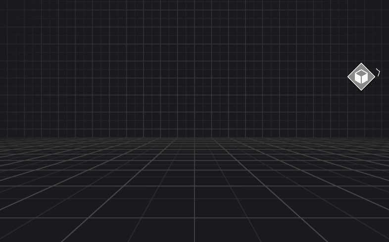

Overview
Target indicators are fundamentally screen coordintes in pixels that represent the projection of a 3D position in world space. Target indicators can be configured to be bound by the edges of the screen so that they are always visible and indicate the closest direction to a target. This is useful in games or apps where you want to show users where to go or where to look that is difficult to find or not in view of the camera.
Target indicators also provides additional information that can provide more context of a target such as the rotation needed to point an arrow at a target or whether the target is outside a configured boundary of the screen. For example you can have a target indicator mark an important object and when the object moves off screen the indicator enables an arrow that rotates as the indicator stays bound to the screen to show exactly where the object is.

Main components
The target indicator system is comprised of two main components.
Target Indicator Manager
The target indicator manager is responsible for managing all of the tracked targets and calculating the data necessary for displaying an indicator on the screen. It can manage its own life cycle events for you to be notified when indicators change or it can be used to get screen pose data for targets with your own life cycle control. The target indicator manager can be used with any UI system because it only manages the conversion between world space positions and screen space positions.
There are configurable options offered by the target indicator manager to control what type of boundary you want, it's shape, and it's size so you can customize the boundary for your apps needs.
To learn more about how to use the target indicator manager and it's capabilities refer to Target Indicator Manager.
Tip
The Target Indicators package offers Samples that provides prefabs using uGUI that you can customize for your project's needs if you don't want to build your own indicator visualizers.
Target Indicator
The data generated by the target indicator manager that represents the screen space information to visualize target indicators is known as a TargetIndicator. While referred to as a component in the context of the design, a target indicator is not a component in the Unity sense that it can be attached to GameObjects.
A target indicator is a struct that contains relevent information about a tracked target such as the screen pose for the coordinates to place indicators in your UI.
To learn more about how to use target indicators created by the target indicator manager, refer to Target Indicator.